Simple and Easy Recipes
Baked Spicy Chicken Pasta
© 2016 Spicy World, Published on: Nov 26, 2015
Its true that I love eating pasta after coming usa. In India I was more fond of noodles, ramen or maggie. But recently I experimented couple of recipes on pasta and they turned out really well. I love my pasta on spicy side, that's why I mentioned it in the title. After baking with cheese, the taste of this dish became phenomenal. If you do not want to bake or use cheese, then make this dish without them. No worries, it also tastes delicious, believe me. You can say this dish is kind of one-pot-meal, usually don't need any sides. I love 'rotini' pasta, you can use 'penne', 'maccaroni', 'shells' or any kind of your choice. Try this in your kitchen and enjoy the meal with your family.

Ingredients
- 1 cup pasta.
- half cup of minced chicken.
- 2 large tomatoes.
- 1 cup of mix veggies cut into cubes (onion, capsicum, mashrooms).
- 1 cup of shredded cheese.
- Some crushed dried mix herbs / italian seasoning.
- 3 Teaspoons of black pepper powder.
- 2 Teaspoons of paprika powder.
- 1 Teaspoon chopped garlic.
- 3 Teaspoons of tomato sauce.
- 2 Teaspoons of chilli sauce.
- Salt and sugar.
- 4-5 Tablespoons of white oil.

Steps
Keep the tomatoes into some boiling water for 2 minutes and remove them.
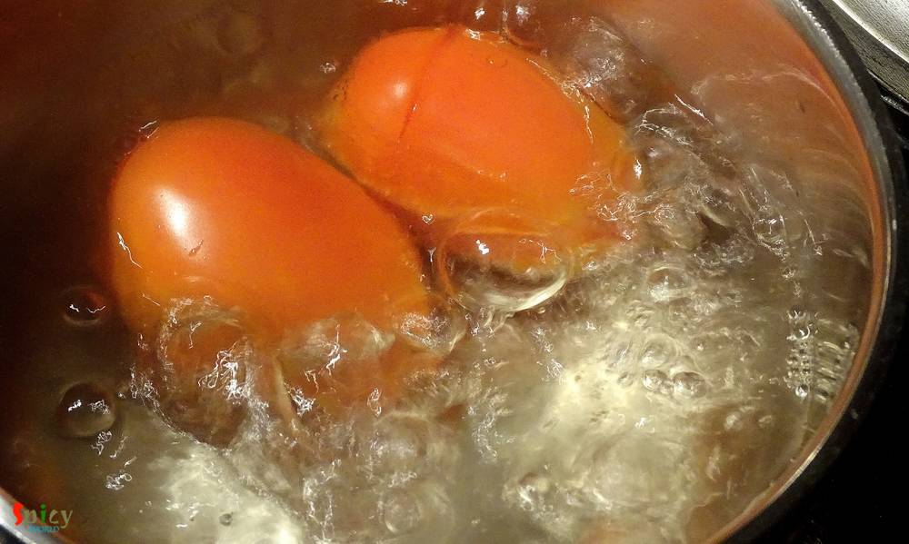You can easily peel the skin.
Then blend them with little water to a smooth paste. Keep it aside.
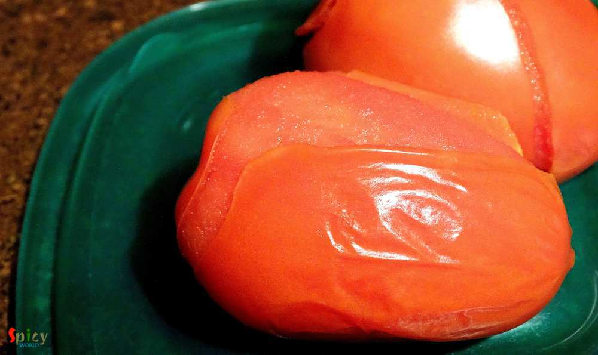Boil the pasta until become firm.
Then drain the water.
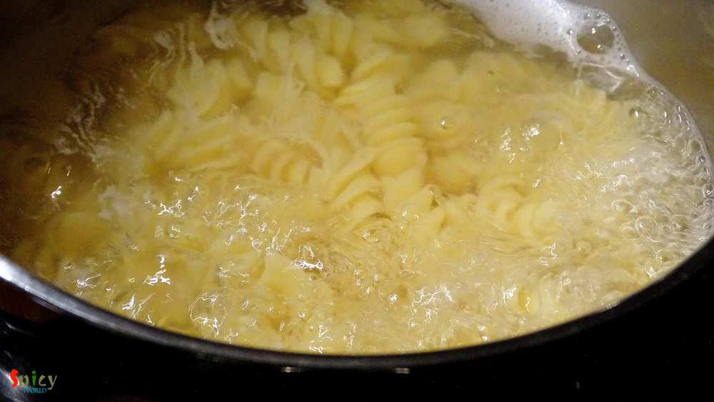Heat 2 Tablespoons of oil in a pan.
Add all the veggies. Cook them in high flame for 4-5 minutes.
Then remove them from the pan.
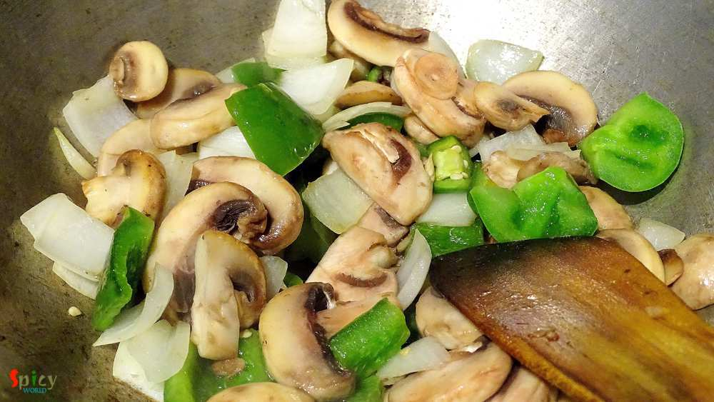Heat the remaining oil.
Add chopped garlic. Saute it for 30 seconds.
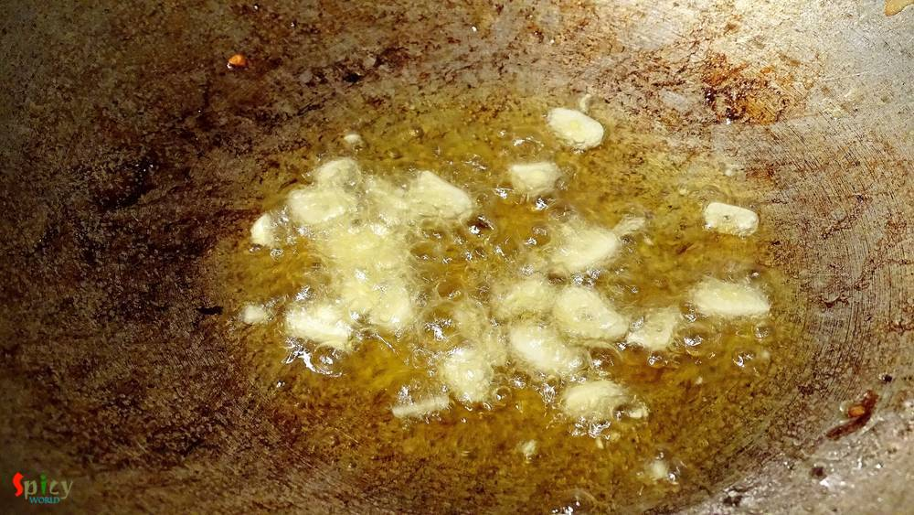Then add paprika powder and black pepper powder. Mix it quickly.
Then immediately add the tomato puree, some salt and 1 Teaspoon sugar. Mix it and cook for 15 minutes in low flame.
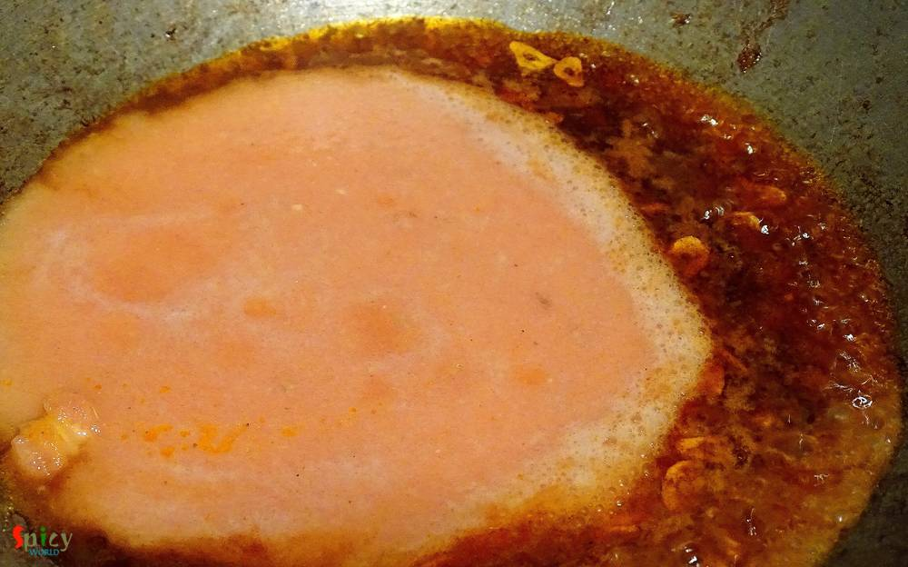When the oil starts separating add the chicken. Mix it very well and cook it another 10 minutes.
If it becomes dry, you can add little water.
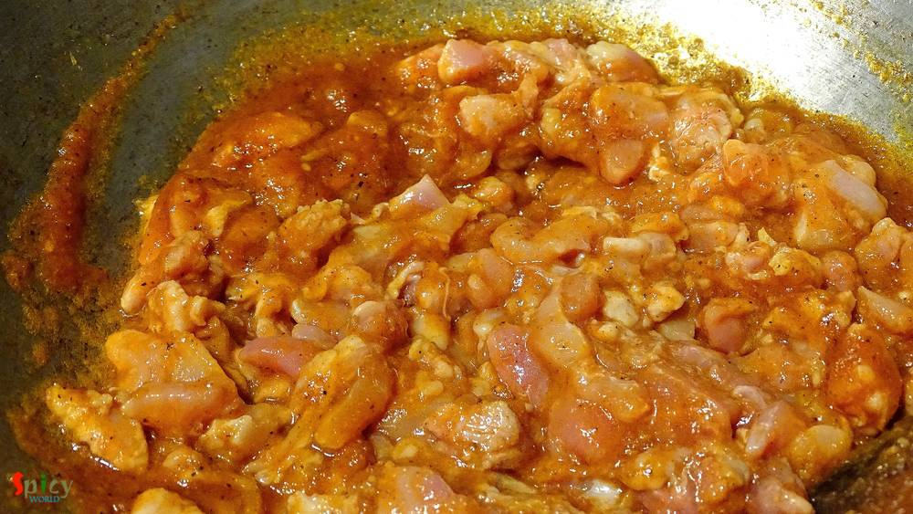After cooking the chicken add crushed mix herbs or italian seasoning and salt. Mix it well.
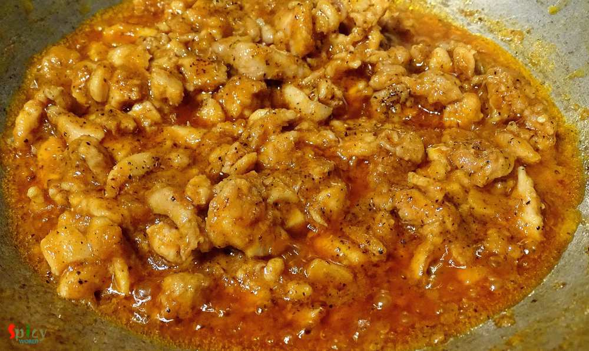Then add in the boiled pasta, some more black pepper powder, tomato and chilli sauce.
Mix them very well for 5 minutes.
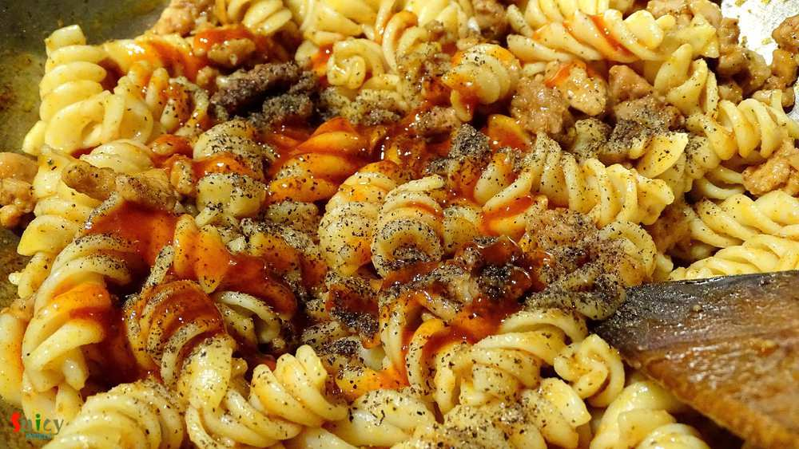After that add those fried veggies. Mix it.
If the pasta becomes dry, add little warm water.
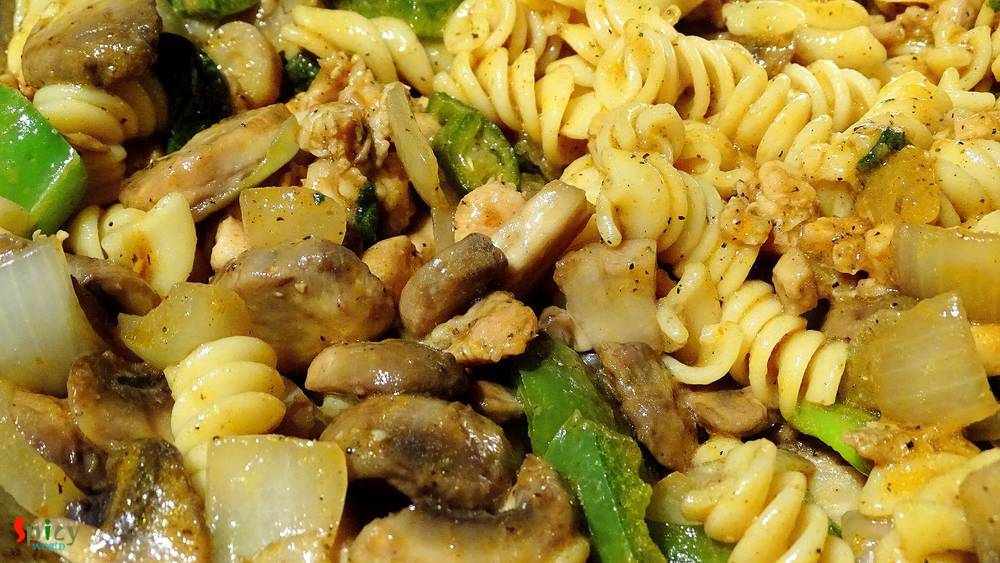Check the seasoning and keep the pasta little juicy.
Now spread a layer of cooked pasta in oven proof bowl.
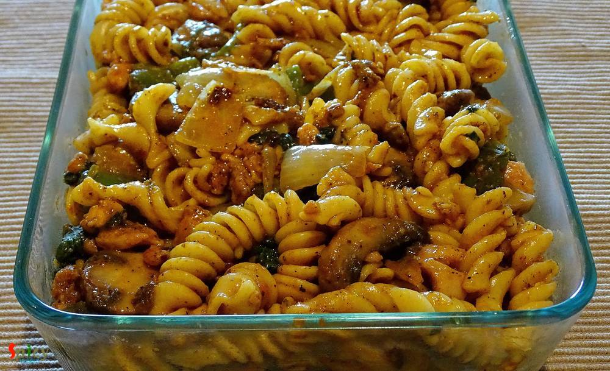Then spread the shredded cheese on top.
Sprinkle some crushed herbs and black pepper powder over the cheese.
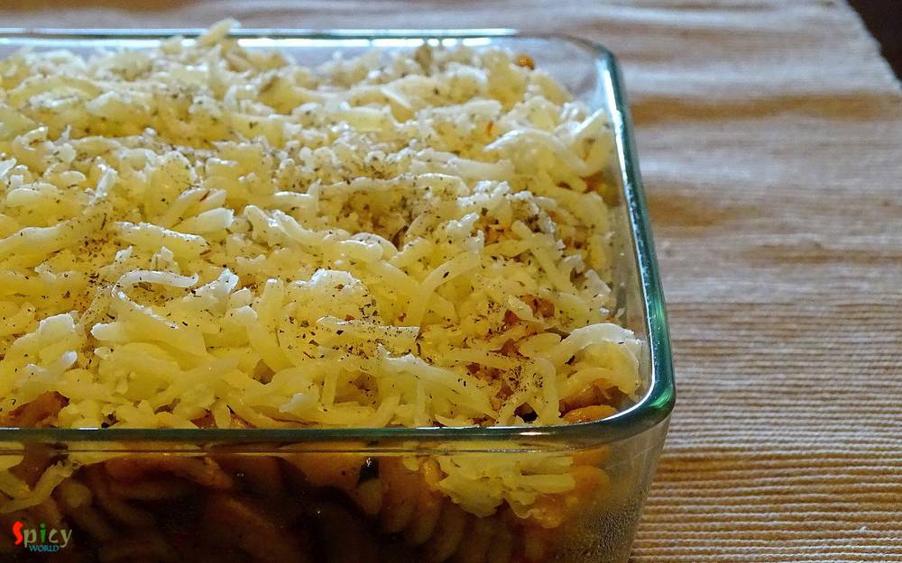Preheat the oven to 400F for 10 minutes.
Then put the tray into the oven and bake it for 15-20 minutes.
Let it rest for 4 minutes and then serve hot.
Your baked spicy chicken pasta is ready ...
Serve them hot and enjoy with your loved ones ...
")